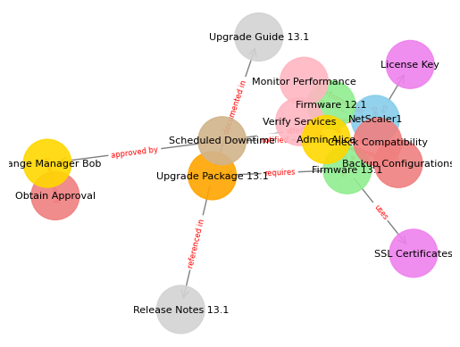

import networkx as nx
import matplotlib.pyplot as plt
# Define nodes with attributes
nodes = [
# NetScaler Instances
('NetScaler1', {'type': 'Instance', 'current_version': '12.1', 'model': 'MPX'}),
('Firmware 12.1', {'type': 'Firmware', 'version': '12.1'}),
('Firmware 13.1', {'type': 'Firmware', 'version': '13.1'}),
# Upgrade Package
('Upgrade Package 13.1', {'type': 'Upgrade Package'}),
# Pre-Upgrade Tasks
('Backup Configurations', {'type': 'Pre-Upgrade Task'}),
('Check Compatibility', {'type': 'Pre-Upgrade Task'}),
('Obtain Approval', {'type': 'Pre-Upgrade Task'}),
# Post-Upgrade Tasks
('Verify Services', {'type': 'Post-Upgrade Task'}),
('Monitor Performance', {'type': 'Post-Upgrade Task'}),
# Dependencies
('License Key', {'type': 'Dependency'}),
('SSL Certificates', {'type': 'Dependency'}),
# Users/Roles
('Admin Alice', {'type': 'User'}),
('Change Manager Bob', {'type': 'User'}),
# Documentation
('Upgrade Guide 13.1', {'type': 'Documentation'}),
('Release Notes 13.1', {'type': 'Documentation'}),
# Events
('Scheduled Downtime', {'type': 'Event'}),
]
# Define edges with relationship labels
edges = [
# Current firmware
('NetScaler1', 'Firmware 12.1', {'relationship': 'is currently running'}),
# Upgrade path
('Firmware 12.1', 'Firmware 13.1', {'relationship': 'upgrades to'}),
('NetScaler1', 'Firmware 13.1', {'relationship': 'will be upgraded to'}),
# Upgrade Package
('Firmware 13.1', 'Upgrade Package 13.1', {'relationship': 'requires'}),
('Upgrade Package 13.1', 'Upgrade Guide 13.1', {'relationship': 'documented in'}),
('Upgrade Package 13.1', 'Release Notes 13.1', {'relationship': 'referenced in'}),
# Pre-Upgrade Tasks
('Backup Configurations', 'NetScaler1', {'relationship': 'performed on'}),
('Check Compatibility', 'NetScaler1', {'relationship': 'performed on'}),
('Obtain Approval', 'Change Manager Bob', {'relationship': 'approved by'}),
# Dependencies
('Firmware 13.1', 'License Key', {'relationship': 'requires'}),
('Firmware 13.1', 'SSL Certificates', {'relationship': 'uses'}),
# Post-Upgrade Tasks
('Verify Services', 'NetScaler1', {'relationship': 'performed on'}),
('Monitor Performance', 'NetScaler1', {'relationship': 'performed on'}),
# Users/Roles
('Admin Alice', 'Backup Configurations', {'relationship': 'performs'}),
('Admin Alice', 'Check Compatibility', {'relationship': 'performs'}),
('Admin Alice', 'Verify Services', {'relationship': 'performs'}),
('Admin Alice', 'Monitor Performance', {'relationship': 'performs'}),
('Change Manager Bob', 'Obtain Approval', {'relationship': 'oversees'}),
# Events
('Scheduled Downtime', 'NetScaler1', {'relationship': 'affects'}),
('Scheduled Downtime', 'Admin Alice', {'relationship': 'notified'}),
('Scheduled Downtime', 'Change Manager Bob', {'relationship': 'approved by'}),
]
# Create a directed graph
G = nx.DiGraph()
# Add nodes and edges
G.add_nodes_from(nodes)
G.add_edges_from(edges)
# Define node colors
node_colors = []
for node in G.nodes(data=True):
node_type = node[1]['type']
if node_type == 'Instance':
node_colors.append('skyblue')
elif node_type == 'Firmware':
node_colors.append('lightgreen')
elif node_type == 'Upgrade Package':
node_colors.append('orange')
elif node_type == 'Pre-Upgrade Task':
node_colors.append('lightcoral')
elif node_type == 'Post-Upgrade Task':
node_colors.append('lightpink')
elif node_type == 'Dependency':
node_colors.append('violet')
elif node_type == 'User':
node_colors.append('gold')
elif node_type == 'Documentation':
node_colors.append('lightgray')
elif node_type == 'Event':
node_colors.append('tan')
else:
node_colors.append('white')
# Define edge labels
edge_labels = {(u, v): d['relationship'] for u, v, d in G.edges(data=True)}
# Position nodes using spring layout
pos = nx.spring_layout(G, k=0.5, iterations=50)
# Draw nodes
nx.draw_networkx_nodes(G, pos, node_color=node_colors, node_size=1500, alpha=0.9)
# Draw edges
nx.draw_networkx_edges(G, pos, edge_color='gray', arrowstyle='->', arrowsize=15)
# Draw node labels
nx.draw_networkx_labels(G, pos, font_size=8, font_family='sans-serif')
# Draw edge labels
nx.draw_networkx_edge_labels(G, pos, edge_labels=edge_labels, font_color='red', font_size=6)
# Remove axis
plt.axis('off')
# Set the figure size
plt.figure(figsize=(15, 10))
# Display the graph
plt.show()
<Figure size 1500x1000 with 0 Axes>